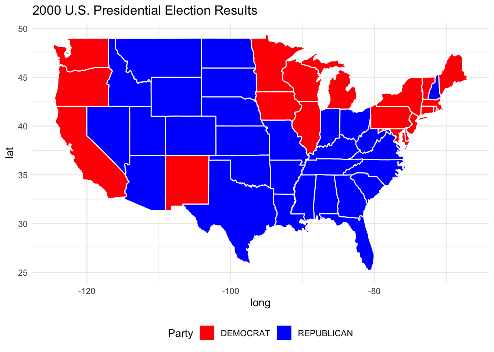

Project Overview: Analyzing Electoral College Vote Allocation and Election Fairness
This project explores the fairness and impact of different Electoral College Vote (ECV) allocation schemes in the U.S. presidential election process. The Electoral College, a unique feature of the American electoral system, plays a critical role in determining the outcome of presidential elections. However, questions about the fairness of the current Winner-Takes-All (WTA) system have sparked ongoing debate, especially in cases where a candidate wins the popular vote but loses the Electoral College. This project examines alternative ECV allocation methods, such as Proportional Representation, the District Method, and the National Popular Vote (NPV), to determine how they might affect election outcomes and improve the system’s representation of the popular will.
Project Goals
Visualize Electoral College Allocation Schemes: Using data and maps, I will create visualizations to show how different ECV allocation methods would impact election results. This includes an animated choropleth map that represents shifts over time in the distribution of Electoral College votes by party under different allocation schemes.
Analyze the Fairness of Allocation Schemes: I will compare the results of the Winner-Takes-All system to alternative methods, assessing which method better represents the overall voting population. The analysis will focus on the 2000 U.S. Presidential Election as a case study due to its controversial outcome and narrow margins, highlighting how each allocation method would affect the result.
Evaluate ECV Scheme Impact on Electoral Outcomes: By applying each ECV scheme to historical election data, I aim to identify scenarios where the allocation scheme would have significantly altered the result. I will use historical data from presidential elections between 1976 and 2020 to study changes in Electoral College outcomes under different methods.
Discuss Policy Implications: My findings will contribute to discussions on Electoral College reform, examining whether more representative allocation methods, such as Proportional Representation or the National Popular Vote, would create a fairer electoral system.
Project Structure
Data Collection and Processing: Download and process Congressional shapefiles and election data for each election cycle under study, focusing on creating maps that illustrate each state’s Electoral College results over time.
Advanced Visualization Techniques: Create animated and faceted visualizations that represent Electoral College allocations by state and year. This includes using geospatial transformations to ensure consistent mapping for comparison.
Fact Check and Fairness Evaluation: Analyze each allocation method’s impact on historical election outcomes, determining the alignment with the popular vote. I will provide an in-depth fact check on the 2000 election and explore how different allocation methods could have produced different outcomes.
Through these steps, this project aims to shed light on how different ECV schemes could transform U.S. presidential elections, helping to inform discussions on potential Electoral College reforms that could enhance fairness and better reflect the voice of American voters.
The United States’ Electoral College system is frequently debated for its fairness in representing voters’ preferences. This project explores alternative Electoral College allocation methods—proportional and district-based allocation—against the traditional winner-take-all approach. By analyzing election data, the goal is to evaluate whether these alternative methods could yield more representative outcomes and potentially reduce discrepancies between the popular vote and election results.
Set-Up and Initial Exploration
Data I: US House Election Votes from 1976 to 2022
# Load necessary librarieslibrary(dplyr)
Attaching package: 'dplyr'
The following objects are masked from 'package:stats':
filter, lag
The following objects are masked from 'package:base':
intersect, setdiff, setequal, union
# Load the House election datahouse_data <-read.csv("/Users/siddhikataria/Downloads/1976-2022-house.csv")# Load the Presidential vote datapresidential_data <-read.csv("/Users/siddhikataria/Downloads/1976-2020-president.csv")# Inspect both data structuresstr(house_data)
year state state_po state_fips state_cen state_ic office district stage
1 1976 ALABAMA AL 1 63 41 US HOUSE 1 GEN
2 1976 ALABAMA AL 1 63 41 US HOUSE 1 GEN
3 1976 ALABAMA AL 1 63 41 US HOUSE 1 GEN
4 1976 ALABAMA AL 1 63 41 US HOUSE 2 GEN
5 1976 ALABAMA AL 1 63 41 US HOUSE 2 GEN
6 1976 ALABAMA AL 1 63 41 US HOUSE 2 GEN
runoff special candidate party writein mode
1 FALSE FALSE BILL DAVENPORT DEMOCRAT FALSE TOTAL
2 FALSE FALSE JACK EDWARDS REPUBLICAN FALSE TOTAL
3 FALSE FALSE WRITEIN TRUE TOTAL
4 FALSE FALSE J CAROLE KEAHEY DEMOCRAT FALSE TOTAL
5 FALSE FALSE WILLIAM L "BILL" DICKINSON REPUBLICAN FALSE TOTAL
6 FALSE FALSE WRITEIN TRUE TOTAL
candidatevotes totalvotes unofficial version fusion_ticket
1 58906 157170 FALSE 20230706 FALSE
2 98257 157170 FALSE 20230706 FALSE
3 7 157170 FALSE 20230706 FALSE
4 66288 156362 FALSE 20230706 FALSE
5 90069 156362 FALSE 20230706 FALSE
6 5 156362 FALSE 20230706 FALSE
year state state_po state_fips state_cen state_ic office
1 1976 ALABAMA AL 1 63 41 US PRESIDENT
2 1976 ALABAMA AL 1 63 41 US PRESIDENT
3 1976 ALABAMA AL 1 63 41 US PRESIDENT
4 1976 ALABAMA AL 1 63 41 US PRESIDENT
5 1976 ALABAMA AL 1 63 41 US PRESIDENT
6 1976 ALABAMA AL 1 63 41 US PRESIDENT
candidate party_detailed writein candidatevotes
1 CARTER, JIMMY DEMOCRAT FALSE 659170
2 FORD, GERALD REPUBLICAN FALSE 504070
3 MADDOX, LESTER AMERICAN INDEPENDENT PARTY FALSE 9198
4 BUBAR, BENJAMIN ""BEN"" PROHIBITION FALSE 6669
5 HALL, GUS COMMUNIST PARTY USE FALSE 1954
6 MACBRIDE, ROGER LIBERTARIAN FALSE 1481
totalvotes version notes party_simplified
1 1182850 20210113 NA DEMOCRAT
2 1182850 20210113 NA REPUBLICAN
3 1182850 20210113 NA OTHER
4 1182850 20210113 NA OTHER
5 1182850 20210113 NA OTHER
6 1182850 20210113 NA LIBERTARIAN
Data II: Congressional Boundary Files 1976 to 2012
# List of URLs for the shapefilesurls <-c("https://cdmaps.polisci.ucla.edu/shp/districts001.zip","https://cdmaps.polisci.ucla.edu/shp/districts002.zip","https://cdmaps.polisci.ucla.edu/shp/districts003.zip","https://cdmaps.polisci.ucla.edu/shp/districts004.zip","https://cdmaps.polisci.ucla.edu/shp/districts005.zip","https://cdmaps.polisci.ucla.edu/shp/districts006.zip","https://cdmaps.polisci.ucla.edu/shp/districts007.zip","https://cdmaps.polisci.ucla.edu/shp/districts008.zip","https://cdmaps.polisci.ucla.edu/shp/districts009.zip","https://cdmaps.polisci.ucla.edu/shp/districts010.zip","https://cdmaps.polisci.ucla.edu/shp/districts011.zip","https://cdmaps.polisci.ucla.edu/shp/districts012.zip","https://cdmaps.polisci.ucla.edu/shp/districts013.zip","https://cdmaps.polisci.ucla.edu/shp/districts014.zip","https://cdmaps.polisci.ucla.edu/shp/districts015.zip","https://cdmaps.polisci.ucla.edu/shp/districts016.zip","https://cdmaps.polisci.ucla.edu/shp/districts017.zip","https://cdmaps.polisci.ucla.edu/shp/districts018.zip","https://cdmaps.polisci.ucla.edu/shp/districts019.zip","https://cdmaps.polisci.ucla.edu/shp/districts020.zip","https://cdmaps.polisci.ucla.edu/shp/districts021.zip","https://cdmaps.polisci.ucla.edu/shp/districts022.zip","https://cdmaps.polisci.ucla.edu/shp/districts023.zip","https://cdmaps.polisci.ucla.edu/shp/districts024.zip","https://cdmaps.polisci.ucla.edu/shp/districts025.zip")# Directory to save the downloaded filessave_directory <-"congressional_shapefiles"# Create directory if it does not existif (!dir.exists(save_directory)) {dir.create(save_directory)}# Loop through each URL and download the file if not already presentfor (url in urls) {# Extract the file name from the URL file_name <-basename(url) file_path <-file.path(save_directory, file_name)# Check if the file already exists to avoid re-downloadingif (!file.exists(file_path)) {cat("Downloading", file_name, "...\n")# Download filedownload.file(url, file_path, mode ="wb")cat(file_name, "downloaded successfully.\n") } else {cat(file_name, "already exists, skipping download.\n") }}
Data III: Congressional Boundary Files 2014 to Present
# Define base URLs for each yearbase_urls <-list("2014"="https://www2.census.gov/geo/tiger/TIGER2014/CD/","2015"="https://www2.census.gov/geo/tiger/TIGER2015/CD/","2016"="https://www2.census.gov/geo/tiger/TIGER2016/CD/","2017"="https://www2.census.gov/geo/tiger/TIGER2017/CD/","2018"="https://www2.census.gov/geo/tiger/TIGER2018/CD/","2019"="https://www2.census.gov/geo/tiger/TIGER2019/CD/","2020"="https://www2.census.gov/geo/tiger/TIGER2020/CD/","2021"="https://www2.census.gov/geo/tiger/TIGER2021/CD/","2022"="https://www2.census.gov/geo/tiger/TIGER2022/CD/")# Congressional district codes per yearcongress_sessions <-list("2014"="113", "2015"="114", "2016"="114", "2017"="115","2018"="115", "2019"="116", "2020"="116", "2021"="117","2022"="117")# Directory to save the downloaded filessave_directory <-"census_shapefiles"
Initial Exploration of Vote Count Data
# Load the necessary librarieslibrary(dplyr)library(tidyr)
Warning: package 'tidyr' was built under R version 4.3.2
# Read in the house data filehouse_data <-read.csv("/Users/siddhikataria/Downloads/1976-2022-house.csv", header =TRUE)head(house_data)
year state state_po state_fips state_cen state_ic office district stage
1 1976 ALABAMA AL 1 63 41 US HOUSE 1 GEN
2 1976 ALABAMA AL 1 63 41 US HOUSE 1 GEN
3 1976 ALABAMA AL 1 63 41 US HOUSE 1 GEN
4 1976 ALABAMA AL 1 63 41 US HOUSE 2 GEN
5 1976 ALABAMA AL 1 63 41 US HOUSE 2 GEN
6 1976 ALABAMA AL 1 63 41 US HOUSE 2 GEN
runoff special candidate party writein mode
1 FALSE FALSE BILL DAVENPORT DEMOCRAT FALSE TOTAL
2 FALSE FALSE JACK EDWARDS REPUBLICAN FALSE TOTAL
3 FALSE FALSE WRITEIN TRUE TOTAL
4 FALSE FALSE J CAROLE KEAHEY DEMOCRAT FALSE TOTAL
5 FALSE FALSE WILLIAM L "BILL" DICKINSON REPUBLICAN FALSE TOTAL
6 FALSE FALSE WRITEIN TRUE TOTAL
candidatevotes totalvotes unofficial version fusion_ticket
1 58906 157170 FALSE 20230706 FALSE
2 98257 157170 FALSE 20230706 FALSE
3 7 157170 FALSE 20230706 FALSE
4 66288 156362 FALSE 20230706 FALSE
5 90069 156362 FALSE 20230706 FALSE
6 5 156362 FALSE 20230706 FALSE
# Load the house data filehouse_data <-read.csv("/Users/siddhikataria/Downloads/1976-2022-house.csv", header =TRUE)# Filter and summarize the seat countsseat_changes <- house_data %>%filter(year %in%c(1976, 2022)) %>%group_by(state, year) %>%summarise(seat_count =n_distinct(district), .groups ='drop') %>%pivot_wider(names_from = year, values_from = seat_count, names_prefix ="year_") %>%mutate(seat_change = year_2022 - year_1976) %>%arrange(desc(seat_change))# Display the resultprint(seat_changes)
Warning: package 'maps' was built under R version 4.3.3
# Read in the datapresident_data <-read.csv("/Users/siddhikataria/Downloads/1976-2020-president.csv", header =TRUE)# Filter data for the 2000 electionpresident_data_2000 <- president_data %>%filter(year ==2000)# Select relevant columnspresident_data_2000 <- president_data_2000 %>%select(state, party_simplified, candidatevotes, totalvotes)# Standardize state names to lowercase to match map datapresident_data_2000$state <-tolower(president_data_2000$state)# Calculate the winning party in each state based on who received the most votespresident_data_2000 <- president_data_2000 %>%group_by(state) %>%arrange(desc(candidatevotes)) %>%slice(1) %>%ungroup()# Get the map data for the statesus_map <-map_data("state")# Merge the map data with the election resultsmap_data_merged <-left_join(us_map, president_data_2000, by =c("region"="state"))# Create the chloropleth mapggplot(map_data_merged, aes(x = long, y = lat, group = group, fill = party_simplified)) +geom_polygon(color ="white") +scale_fill_manual(values =c("red", "blue")) +# Red for Republican, Blue for Democratlabs(title ="2000 U.S. Presidential Election Results",fill ="Party") +theme_minimal() +theme(legend.position ="bottom")

Part B.
# Load Alaska and Hawaii data (as separate maps)alaska_map <-map_data("state") %>%filter(region =="alaska")hawaii_map <-map_data("state") %>%filter(region =="hawaii")# Plot with inset Alaska and Hawaiiggplot(map_data_merged, aes(x = long, y = lat, group = group, fill = party_simplified)) +geom_polygon(color ="white") +scale_fill_manual(values =c("red", "blue")) +# Red for Republican, Blue for Democratlabs(title ="2000 U.S. Presidential Election Results",fill ="Party") +theme_minimal() +theme(legend.position ="bottom") +# Add Alaska and Hawaii inset mapsannotation_custom(ggplotGrob(ggplot() +geom_polygon(data = alaska_map, aes(x = long, y = lat, group = group), fill ="gray70", color ="white") +theme_void()), xmin =-165, xmax =-130, ymin =10, ymax =40) +annotation_custom(ggplotGrob(ggplot() +geom_polygon(data = hawaii_map, aes(x = long, y = lat, group = group), fill ="gray70", color ="white") +theme_void()), xmin =-160, xmax =-140, ymin =15, ymax =30)
Task 6: Advanced Chloropleth Visualization of Electoral College Results